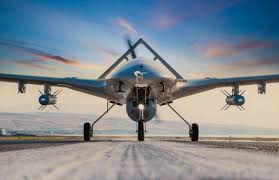

Intro
UAV, Drone des noms qui se sont démocratisés en quelques années. Ce qui était autre fois un outil utilisé par nos héros de film pour mener des opérations toujours plus ambitieuses, c'est transformé en une arme redoutable pour la vie privée et parfois même comme une arme de guerre comme le démontre le conflit en Ukraine ou la tentative d'assassinat du président Nicolas Maduro .Face à cette menace, des initiatives innovantes ont vu le jour comme en Ukraine ou une application a été mise en place pour détecter et fournir à l'armée la position des drones, missiles et avions russes.C'est dans ce cadre que j'ai déciddé d'entrainer un réseaux de neurones pouvant détecter l'intrusion d'un drone et le signaler via une notification. De plus l'information sera sauvgardé das un base de donnéee permettant ainsi le stockage de tous les événement survenu dans la journé semaine etc.